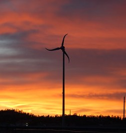

Energy Generation
Solar and wind power are not new concepts, and they are both gaining attention for residential use. Installing solar panels and windmills may require hiring a specialist and can be quite expensive. However, solar panels and wind turbines alone can reduce a household’s impact on community resources by over half each year.
Solar Panels

Solar Photovoltaic (PV) systems produce electricity from sunlight. Solar modules are the core of any solar PV system, and are based on solar (photovoltaic) cells, which are made of special materials called semiconductors, usually silicon. Solar modules collect the sun's energy and convert it into electricity. The number of modules connected to form a rooftop array will depend on your needs, climate and on the modules’ wattage. Solar electricity production depends mainly on sunlight and not on temperatures. Your electric power production will depend on the number of hours of sunlight and on the number of watts of the panel at your site.
Most PV solar systems are on-grid systems. A stand alone PV energy system is not connected to a wider public or private grid. In this case it responds only to the needs of its owner. The stand alone system is typically more expensive due to the required set of batteries for storing the energy. Stand-alone PV solutions are popular in remote areas, where the connection to electric grids is expensive or impossible.
Solar PV systems are very expensive. The payback period is more than 10-15 years in most cases, unless if you live in a sunny climate. Federal and state rebates and tax credits can help defray the cost of this investment.
Wind Turbines
Wind turbines do not use fossil energy sources, and do not produce CO2 or any other gas emission. There also are not any toxic or hazardous materials related to the turbines. Wind electricity is an environmentally clean type of energy. Yet wind energy development has caused some concerns, such as:
- Noise
- Visual Impact
- Bird and Bat Deaths
- Health And Safety Considerations
From the proponent stand point, the noise associated with old wind turbines do not exist in the newer generation of wind turbines. Modern turbines with proper siting and insulating materials may further minimize possible acoustic impacts.
Wind turbines must often be sited in very exposed and highly visible places, which some neighbors might consider as intrusive. These are rather subjective opinions. Wind turbines do not represent necessarily a negative aesthetical presence, not any worse than satellite TV disk.
Bird and bat mortality caused by wind turbines is a very controversial issue. Some wildlife and conservation groups are stressing concerns involving those deaths, but defenders of wind energy development argue that birds also collide and are killed by lighthouses, tall buildings, radio and television structures, poles, masts, cars and airplanes.

Health and safety considerations are also reported, but they seem rather speculative. The danger of ice throwing, blade throws, collapse in a small wind turbine is quite insignificant. Modern wind turbine standards ensure a high level of operational reliability and safety.
When choosing the turbine capacity, take into account your home’s electrical needs and the wind conditions on your site. Typically, a wind turbine in the range of 5 to 15 kilowatts will respond to your home’s electrical demand, but the average wind speed in your property is also critical. Average electrical home needs range between 4,500 and 11.000 kilowatt hours (kWh) per year, and with good wind resources a typical 5kW turbine may produce 13,000 kWh per year. Small home wind turbines demand a property with a minimum of one acre. Your small turbine shouldn’t be obstructed by buildings, trees, hills, etc. These obstructions are a source of wind turbulence and a cause of reduced wind speed. The annual average wind speed in your property should attain a minimum of 11-13 mph or 6 meters per second. Towers with heights between 80 and 120-foot are common. Urban wind systems for smaller urban property are rather experimental and typically non-tested products. Their performance and the low maintenance costs for low wind speed conditions claimed by manufacturers are yet to be tested and confirmed.